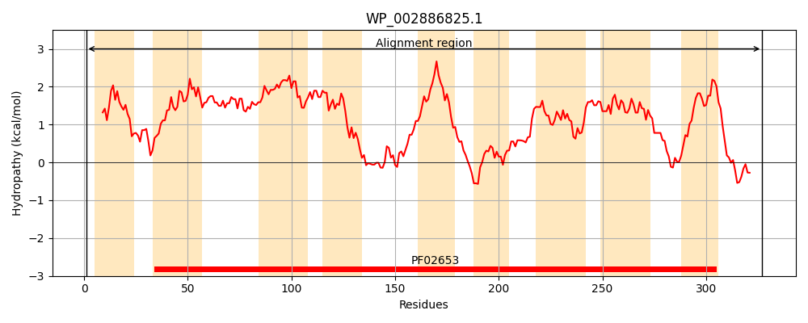
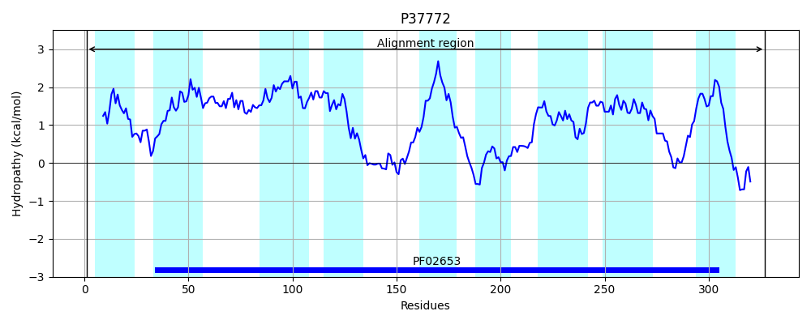
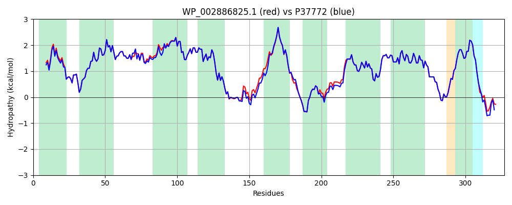

Hit Accession: P37772
Hit TCID: 3.A.1.2.25
Hit Description: gnl|BL_ORD_ID|10138 gnl|TC-DB|P37772|3.A.1.2.25 Inner membrane ABC transporter permease protein YjfF OS=Escherichia coli (strain K12) GN=yjfF PE=1 SV=3
Mach Len: 327
e:0.000000
Query TMS Count : 9
Hit TMS Count: 9
TMS-Overlap Score: 9.500000
Predicted Substrates:CHEBI:9840;UDP-sugar
BLAST Alignment:
Score: 1553 , Bit scores: 602 bits, E-value: 0.0e+00, Alignment length: 327, Percentage identity: 94
Query: 1 MIKRNLPLMITLAVFVLGYLYCLTQFPGFASTRVICNILTDNAFLGIIAVGMTFVILSGGIDLSVGSVIAFTGVFLAKAIGFWGISPLVAFPLVLVMGCAFGAFMGLLIDALKIPAFIITLAGMFFLRGVSYLVSEESIPINHPVYDTLSGLAWTIPGGGRLSAMGLLMLLVVVAGIFVAHRTRFGNQVYAIGGNATSANLMGISTRSATIRIYMLSTGLATLAGIVFSIYTQAGYALAGVGVELDAIASVVIGGTLLSGGVGTVLGTLFGVAIQGLIQTYINFDGTLSSWWTKIAIGILLFIFIALQRGLTVLWENRQNAAVTRVS 327
MIKRNLPLMIT+ VFVLGYLYCLTQFPGFASTRVICNILTDNAFLGIIAVGMTFVILSGGIDLSVGSVIAFTGVFLAK IG +G+SPL+AFPLVLVMGCAFGAFMGLLIDALKIPAFIITLAGMFFLRGVSYLVSEESIPINHP+YDTLS LAW IPGGGRLSAMGLLML VVV GIF+AHRTRFGNQVYAIGGNATSANLMGISTRS TIRIYMLSTGLATLAGIVFSIYTQAGYALAGVGVELDAIASVVIGGTLLSGGVGTVLGTLFGVAIQGLIQTYINFDGTLSSWWTKIAIGILLFIFIALQRGLTVLWENRQ++ VTRV+
Sbjct: 1 MIKRNLPLMITIGVFVLGYLYCLTQFPGFASTRVICNILTDNAFLGIIAVGMTFVILSGGIDLSVGSVIAFTGVFLAKVIGDFGLSPLLAFPLVLVMGCAFGAFMGLLIDALKIPAFIITLAGMFFLRGVSYLVSEESIPINHPIYDTLSSLAWKIPGGGRLSAMGLLMLAVVVIGIFLAHRTRFGNQVYAIGGNATSANLMGISTRSTTIRIYMLSTGLATLAGIVFSIYTQAGYALAGVGVELDAIASVVIGGTLLSGGVGTVLGTLFGVAIQGLIQTYINFDGTLSSWWTKIAIGILLFIFIALQRGLTVLWENRQSSPVTRVN 327 | Protein Hydropathy Plots: |
|---|
|  |  |
Pairwise Alignment-Hydropathy Plot:
|
|---|
|  |